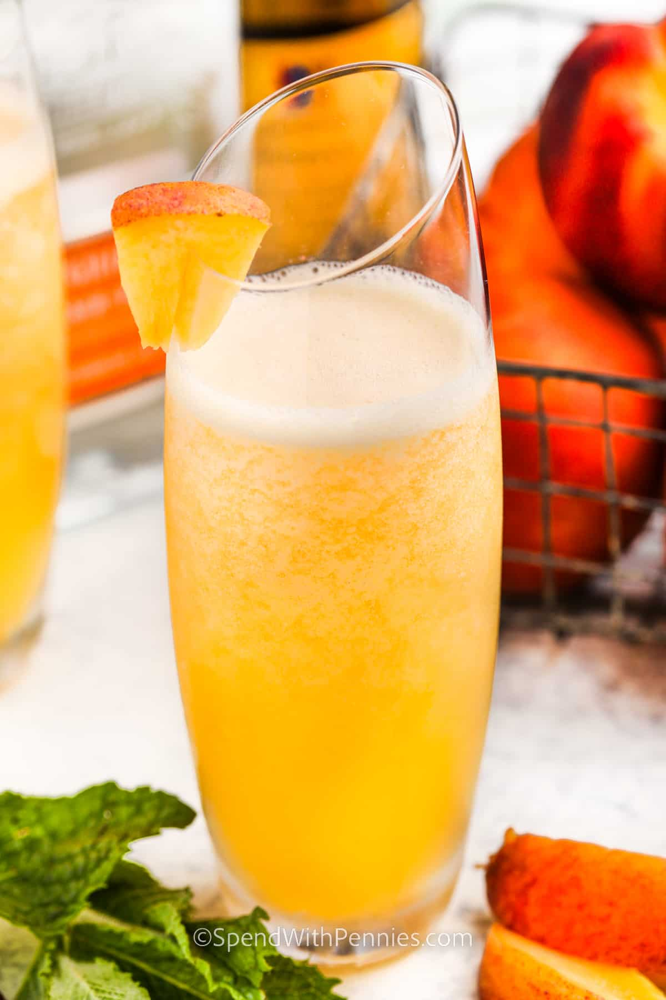

Peach Bellini

Peach Bellinis are the fresh, new classic that’s taking over
summer celebrations!
Ingredients
- 1 cup frozen peach slices or 1 fresh peach
- 1 ounce peach schnapps
- 12 ounces prosecco or sparkling wine
Steps
- Combine peach slices and peach schnapps in a blender or mini
food processor and blend until smooth.
- Divide over two champagne flutes and top with prosecco.
Home